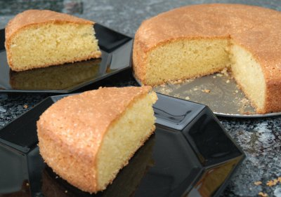

| Zutaten für 12 Stück: | |
| 20-30 | Mandeln |
| Fett | |
| 2 El | gemahlene Mandeln für die Form |
| 100 g | weiche Butter |
| 175 g | Zucker |
| 3 | Eier |
| 3 El | Mandellikör |
| 175 g | Mehl |
| 2 Tl | Backpulver |
Vorbereitungszeit: 20 Minuten, Backzeit: 40 Minuten
1. Die Mandeln einige Minuten in kochendes Wasser geben, in ein Sieb abgiessen und kalt abbrausen, dann aus den dunklen Häutchen drücken.
2. Den Backofen auf 175°C vorheizen. Eine 24 cm grosse Springform fetten und mit gemahlenen Mandeln ausstreuen.
3. Die Butter mit dem Zucker hell-cremig aufschlagen, die Eier und den Likör, dann das Mehl und das Backpulver unterrühren.
4. In der vorbereiteten Form glatt streichen, die Mandeln darauf verteilen. Auf der zweiten Schiene von unten im Ofen etwa 40 Minuten backen.
Pro Stück etwa 240 kcal
Musterrezept aus Backen und Geniessen.
Wir waren etwas enttäuscht. Ich hatte die Mandeln vergessen die man rein drücken soll. Aber auch mit denen wäre es glaub ein sehr simpler Kuchen. Ich nahm meine 22 cm Springform und das gab gerade so ein nettes Küchlein. Wir haben versucht mit Amaretto einen Guss zu machen und als getränkte Amaretto-Cake könnte das noch was sein aber der Alkohol hat nicht so dazu geschmeckt. RE, 5.5.2008
@LINKBACK_TAG@ @WAKELOCK@